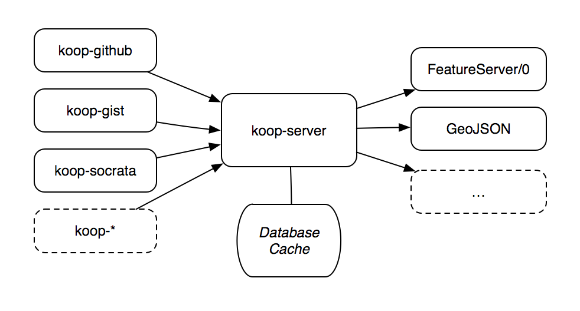

js.geo 2014
Koop
@ajturner
Web API »
GeoJSON
&
FeatureServices
ETL
for APIs

github.com/esri/koop
Github
koop.dc.esri.com/github
Gists
koop.dc.esri.com/gist
Socrata
koop.dc.esri.com/socrata
Exports
geojson, kml, csv, shp
Also it's
R & D
UTF Grids
PNG Tiles
(CartoCSS)
Vector
Tiles!
Discovery, exploration, &
direct access
to OSM
Find points, lines, polygons
Points
/osm/points
Lines
/osm/lines
Polygons
/osm/polygons
Points by
State
/osm/points/state/count
Points by
County
/osm/points/county/count
Cafes in a
State
/osm/points /state/Colorado? where=amenity='cafe'
Cafes in a
State
/osm/points /state/Colorado /field/amenity/cafe
Cafes in a
County
/osm/points /state/Colorado /county/Boulder /field/amenity/cafe
Distinct
values
/osm/points /distinct/amenity
Table
fields
/osm/points /fields
Toilets in
Portland
/osm/points /state/Oregon /county/Multnomah /field/amenity/toilets
build a UI?
o.skoop.m
github.com/esri/Koop